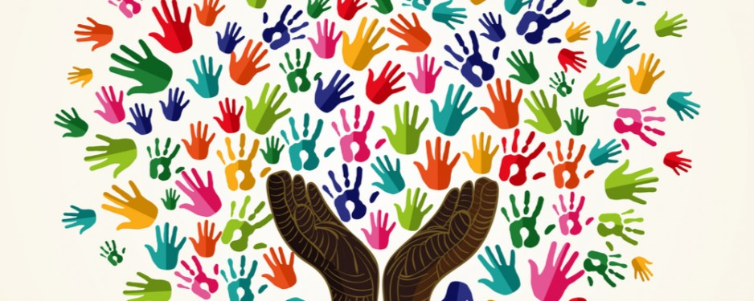

“To become a culturally competent in my future practice as a counsellor I will first become aware of my own worldviews, biases, and values. I will also attempt to understand my client’s needs and worldviews and comprehend the history of oppression that have they have experienced as a marginalized group (Sue & Sue, 2016). Since every client will have a different worldview, I will counsel them in a process that defines their goals consistent to their life experiences and cultural values (Sue & Sue, 2016). I will employ culture-specific intervention strategies and skills that aligns with the client’s beliefs and goals and remain sensitive and non-judgemental in all counselling sessions.” Sue, D. W., & Sue, D. (2016). Counseling the culturally diverse: Theory and practice (7thed.). Hoboken, New Jersey: John Wiley & Sons, Inc.
Taken from Positionality and Intersection Paper, EDPS 624
Throughout this program and practicum, I have learned to be mindful of the diverse approaches to healing and employ those that align with my clients needs. I have found that a holistic approach to understanding the whole picture of a client’s problems has assisted in the healing process. I am striving to become a competent counsellor and be aware of the differences of my client’s views. I believe I have been able to hold different worldviews than my clients and still be able to resolve challenges in a trustworthy and non-judgemental manor. My practicum placement was at Insight Counselling and Therapy Centre, here I worked at a community centre, alongside social workers. I saw low income clients, from all ages, cultures, religions, and backgrounds. I feel very fortunate that I was able to expand my knowledge and gain experience in a diverse and multicultural setting. Looking back on our discussion board posts for EDPS 624, I was drawn to week 8, as it reflects my perspective on a holistic perspective, drawing connections into implementing different therapeutic interventions as no one client is the same and there are many ways to help different clients.
Below are my week 8 discussion board posts.
“My first sparkling moment came from reading promoting Indigenous health mental issues by Stewart (2008). I thought that the model of Indigenous mental health and healing was a great model to display and show the aspects of healing that counsellors need to consider. I especially enjoyed reading the section on the holistic approaches. Participants in this study argued that a holistic approach was fundamental to the practice of healing (Stewart, 2008). Participants said that in a counselling session they would like to discuss food, sleeping, exercising, spirituality, prayer, including elders and traditional healers in their session, and incorporating nature and the community (Stewart, 2008). I definitely agree to this as I find that including a holistic approach to counselling allows for these missing pieces to be incorporated into the healing process.
My second sparkling moment reading the McCabe (2007) and Poonwassie & Charter (2001) articles where they discussed how crucial it is to understand traditional worldviews and versus those of the general Canadian population. McCabe (2007) argues that improper psychological interventions that are not congruent with Indigenous populations can cause another form of colonization. Furthermore, Poonwassie & Charter (2001) techniques for facilitating empowerment to Aboriginal clients is an important step towards de-colonization. Understanding our client’s worldviews and gaining an understanding of ours is crucial in the healing and therapeutic process. Conflicting worldviews and ideals in the counselling process can lead to imbalance, negativity, and a disconnect between the counsellor and client.”
McCabe, G. (2007). The healing path: A culture and community derived Indigenous therapy model. Psyschotherapy: Theory, Research, Practice, Training. 44(2), 148-160
Poonwassie, A., & Charter, A. (2001). An Aboriginal worldview of helping: Empowering approaches. Canadian Journal of Counselling. 35(1), 63-73
Stewart, S. (2008). Promoting Indigenous mental health: Cultural perspectives on healing from Native counsellors in Canada. International Journal of Health Promotion & Education. 46(2). 49-56
Psychological Approaches to Health
This course examined different theories and models of health, illness, and health promotion in a variety of settings. Throughout this course, we reviewed a range of interventions used in the field of health psychology and holistic wellness. As I am an advocate of different interventions and modalities to treat different ailments, such as naturopathic medicine, acupuncture, healing circles, charka healing, and tradition western medicine, this course offered considerations of how holistic approaches are inter connected with each other at an individual, community and health care level.
Below demonstrates my views on different health approaches from our discussion board for EDPS, 664.
I think an awareness of the cultural influences on health and illness that impact an individual’s life is crucial to becoming a culturally competent counsellor. Since every client has a different view on health and illness, it will be critical to counsel them in a collaborative process that is consistent to their goals, values, and beliefs (Sue & Sue, 2016). I believe it is important to recognize that their limitations to the ‘Universal’ biomedical approach. MacLachlan (2015) argues that an awareness of the process of healing used to used to facilitate better heath, such as counsellors showing a greater willingness to discuss emotional and spiritual perspectives on health in a holistic manor. Clients are more likely to feel valued if counsellors not only understand the problem but the person as well and what they need. (MacLachlan, 2015). Sue & Sue (2016) made a similar argument in that Western medicine needs to embrace alternative methods such as therapeutic touch and charka healing. Culture-specific interventions that align with the client’s beliefs will more likely create successful and healing interactions with clients. Overall, I think that attempting to understand my client’s worldviews on health and illness and knowing my own as well is the first step in the counselling process.
MacLachlan, M. (2015). Culture, empowerment and health. In Murray, M. (Ed.). Critical health psychology (2 nd ed) (pp. 125-143). New York, NY: Palgrave Macmillian.
Sue, D. W., & Sue, D. (2016). Counseling the culturally diverse: Theory and practice (7thed.). Hoboken, New Jersey: John Wiley & Sons, Inc.
Finally, one of my favourite assignments attached below is an assignment on different approaches to stress, anxiety, and depression. This assignment showcased information on the variety of approaches such as mindfulness-based interventions, meditation, yoga, indigenous approaches, CBT, ACT, narrative therapy, and positive psychotherapy. This assignment demonstrates that a holistic approach to wellness and health is beneficial as clients react differently to different interventions.
Below is a link to my group PowerPoint Presentation called Approaches to Stress, Anxiety and Depression
Approaches to Stress, Anxiety and Depression 